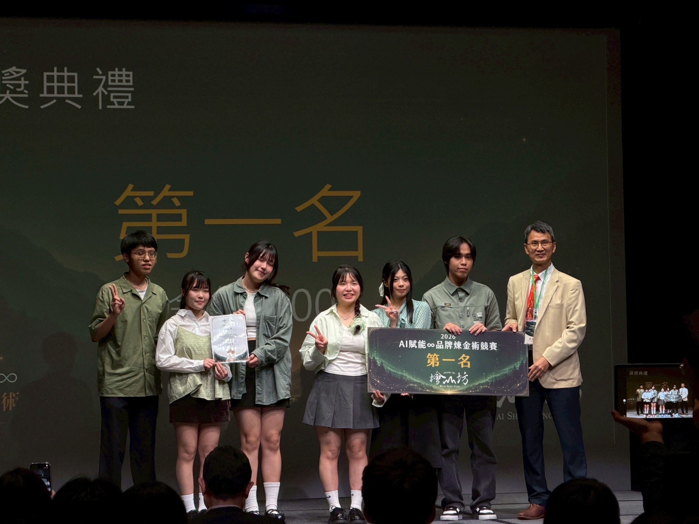
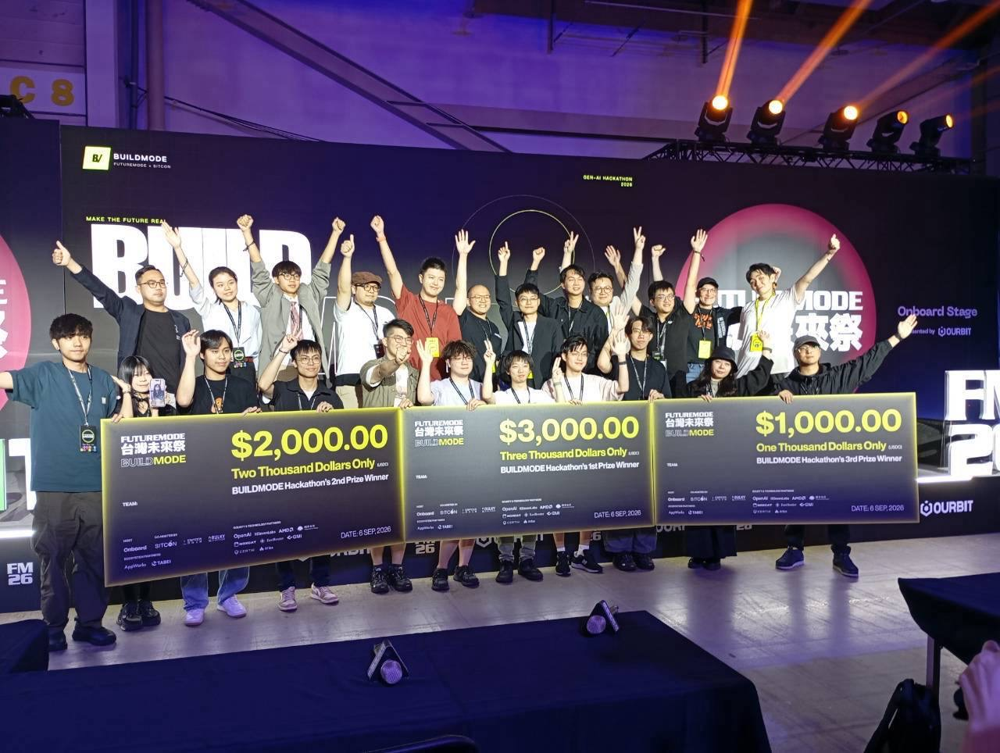
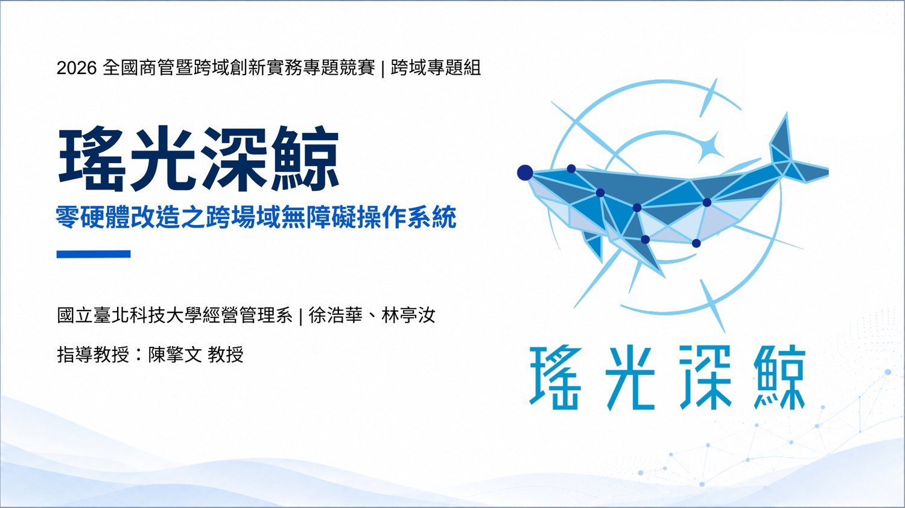
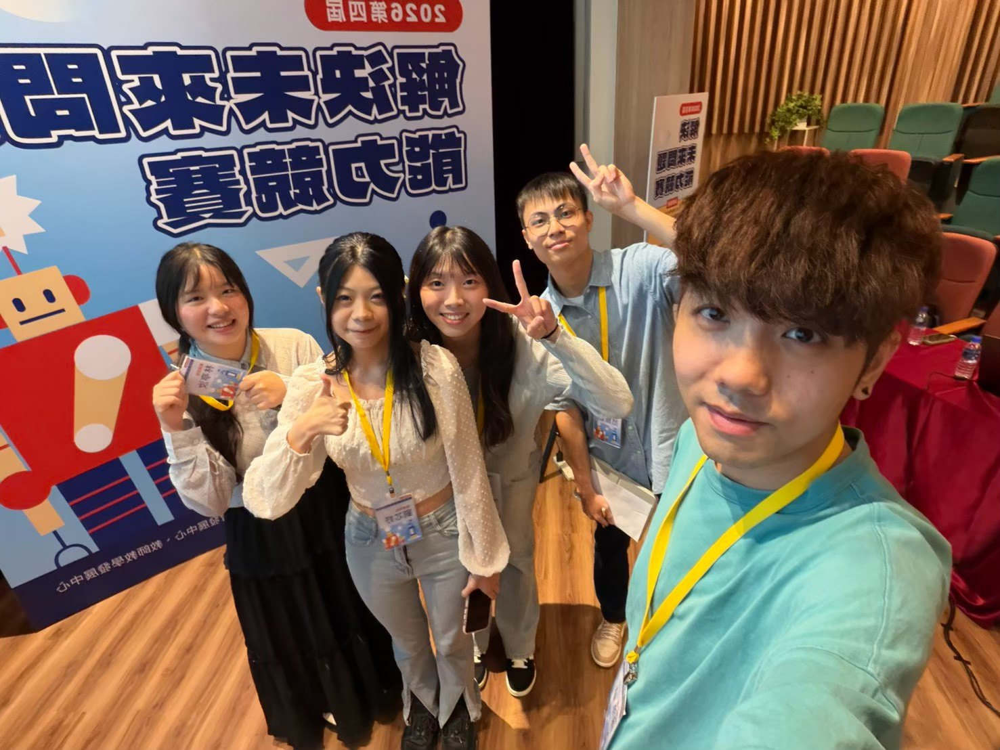

IDEAS WE TURNED INTO PROJECTS
Not just entering—
turning problems into answers.
I enjoy the time pressure and uncertainty of competitions. Together with teammates, I turn user needs, data insights and AI prototypes into work that can be seen, tested and questioned further.
COMPETITION JOURNEY
Start with now, then travel back.
You do not need to read everything at once. Recent work appears first; earlier projects are one period tab away.
Showing 21 experiences
Recent updates
Latest results and challenges still unfolding
ASUS UGen AI League Hackathon
RobinSave is an on-device voice-AI scam-call simulator running on ASUS UGen300.
2026 AI FinTech Innovation Competition
InsureDrama explores interactive insurance communication.
2026 Hsinchu Policy Hackathon
The team completed its policy proposal and final build, carrying forward a clearer way to translate stakeholder needs into policy.
2026 Hotai AI Hackathon
yoxi Companion connects cross-language understanding, delegated family payments and ride updates for migrant caregivers accompanying older adults to medical visits.
View the final proposalHsinchu County Bright Ideas Student Entrepreneurship Challenge
TapAble moved from an accessibility prototype into user evidence, an AI workflow library and a B2B2C model.
View the TapAble venture journeyNASA Space Apps Challenge 2026
Echoes Beyond Earth: Still Answering turns machines left on the Moon and Mars into an explorable, evidence-backed museum.
Open the projectOther 2026 results
Work worth keeping, with dates not yet separated
AI Cabin Perception & Visualization Hackathon
TapAble asks how cabin information can actively reach the person who needs it.
View TapAbleLINE AI Innovation & Entrepreneurship Competition
Extending accessible AI so public kiosks and digital services can be used more independently.
View TapAble2026 Public Policy Proposal Competition
The Taipei Shadow Work Order Plan makes early work experience easier to record and understand.
11th Design For Taiwan
KTV LAB used Pecha Kucha to clarify the design problem, prototype and value proposition.
September to June
From fast builds to accessibility validation
BUILDMODE 2026 Hackathon
A three-day cross-disciplinary sprint from idea to demonstrable ChatKTV prototype.
View project6th Taiwan Yunus Innovation Award
Continuing to validate TapAble through interviews, positioning and voice interaction.
View projectAI Monster Future Survival Challenge
Two interactive prototypes addressing rental and learning information problems.
View project10th 3S Maker Competition
Extending accessibility into orientation, positioning and independent use.
View projectAWS Summit Taipei AI Everywhere Hackathon
Gamification, proactive diagnosis and AI companionship for learning continuity.
View project4th Future Problem-Solving Competition
Using photos and voice to narrow the digital distance between generations.
View projectNational Interdisciplinary Innovation Project Competition
Supporting independent use of public kiosks for visually impaired users.
View projectMay to January
Brand, business cases and service design
23rd ATCC National Business Case Competition
Exploring more natural ways for young people to reach mental-health support.
View projectBNP Paribas Cardif Campus Hackathon
A LINE insurance journey grounded in Gen-Z life situations.
View projectThe first brand proposal
Where the competition journey began
Global Brand Planning & Design Competition · Taiwan Final
Brand promotion and participation design for a maternity and baby industry award.
View projectLATEST RESULTS
New results, new next steps.
A ranking is not the whole story, but it marks the moments when the work was seen, questioned and pushed further.
NASA
1ST
1ST
NASA Space Apps Challenge 2026
Echoes Beyond Earth: Still Answering is an interactive museum of machines left on the Moon and Mars, built with NASA open data, 3D storytelling and a public evidence trail.
Open the project
Local result, not a global award
START
UP
UP
2026 Hsinchu County Bright Ideas National Student Entrepreneurship Challenge
TapAble moved from an accessibility prototype into a venture proposal with user validation, an AI workflow library and a B2B2C venue-funded model, earning third place at the November 20 Meet Taipei final.
View the final deck
12 finalist teams
HOTAI
AI
AI
2026 Hotai AI Hackathon
Jalan Bareng proposed yoxi Companion, combining cross-language AI, delegated family payments and ride updates for migrant caregivers accompanying older adults to medical visits.
View the final proposal
554 proposals · 15 finalists
AI
CABIN
CABIN
2026 AI Cabin Perception & Visualization Hackathon
TapAble’s “The Alert Finds Your Eyes” explores how cabin information can actively reach the person who needs it.
LINE
AI
AI
LINE AI Innovation & Entrepreneurship Competition
TapAble extends AI and accessible service design to make public kiosks and digital services more independently usable.
JURY
PICK
PICK
2026 Public Policy Proposal Competition
Team Future Shadow proposed the Taipei Shadow Work Order Plan so early work experience can be recorded and understood.
TAPABLE · STARTUP JOURNEY
One project, growing into a venture path.
TapAble is not the same deck entered repeatedly. Each round added another layer of technical, user and business evidence.
TapAble
Helping blind and low-vision users complete kiosk tasks independently.
Starting from screens that cannot be seen, buttons that cannot be located and accidental taps, we connected phone NFC, AI voice guidance and kiosk workflows. The goal is not to replace users, but to preserve their option to complete the task themselves.
View the latest venture deck
24/24
transcript-printer screens identified correctly
13/14
fast-food kiosk first tests correct
2/2
iPhone and Android users completed the demo independently
10/10
blind participants completed the full simulated flow
Start with interviews and context
Identify shared barriers across restaurant ordering, hospital check-in and transit-ticket kiosks.
An AI × NFC service flow
Build a five-step journey: scan, tap, receive voice guidance, act and confirm the result.
Cross-device and user testing
Human-review AI-generated workflow drafts, then test across iOS, Android and blind participants.
Venue-funded, free for users
Target chains and venue operators with a B2B2C model for setup and per-kiosk maintenance.
WORK IN PROGRESS
Challenges still unfolding
Only unresolved results stay here, so the current state remains easy to scan.
ASUS UGen AI League Hackathon
RobinSave: an on-device voice-AI scam-call simulator running on ASUS UGen300.
2026 AI FinTech Innovation Competition
Team Robin Guardian explores interactive insurance communication through InsureDrama.
CLOSED CHAPTERS
No award, but still something to carry forward.
The result stays honest while the methods and learning remain visible.
2026 Hsinchu Policy Hackathon
Team “Misfortune Doesn’t Travel Alone” completed its policy proposal and final build. It did not place, but the process strengthened our ability to turn stakeholder needs into a policy intervention.
11th Design For Taiwan
KTV LAB used Pecha Kucha to clarify the design problem, prototype and value proposition. We did not advance, but kept the iteration record and method.
SELECTED ARCHIVE
Work built along the way
Open a project for the problem, my role, the tools and the public presentation materials.

Brand & business · May 2026
AI × Brand Alchemy
Cypress Connections
Connecting reviews, store observation, family needs and membership.
First place
View ↗

AI & build · Sep 2026
BUILDMODE 2026 Hackathon
ChatKTV
A three-day cross-disciplinary sprint from idea to demonstrable prototype.
Second place
View ↗

AI & build · Jul 2026
AWS Summit Taipei AI Everywhere Hackathon
PressPlay AI+
Gamification, proactive diagnosis and AI companionship for learning continuity.
Second · Digital Learning
View ↗

Brand & business · Jan 2026
BNP Paribas Cardif Campus Hackathon
Insurance Bus
A LINE insurance journey grounded in Gen-Z life situations.
Silver Award
View ↗

Social innovation · Jun 2026
National Interdisciplinary Innovation Project Competition
Yaoguang Whale
Supporting independent use of public kiosks for visually impaired users.
Third place
View ↗

AI & build · Aug 2026
AI Monster Future Survival Challenge
Rent Radar & AI learning platform
Two interactive prototypes addressing rental and learning information problems.
Fourth place
View ↗

Social innovation · Sep 2026
6th Taiwan Yunus Innovation Award
TapAble
Linking location, voice interaction and outcome feedback through interviews.
National top 10
View ↗

Social innovation · Aug 2026
10th 3S Maker Competition
Yaoguang Whale: 3S Navigation
Extending accessibility into orientation, positioning and independent use.
Finalist Award
View ↗

Social innovation · Jul 2026
4th Future Problem-Solving Competition
Family Translator
Using photos and voice to narrow the digital distance between generations.
Merit Award
View ↗

Social innovation · Apr–May 2026
23rd ATCC National Business Case Competition
BEACON
Exploring more natural ways for young people to reach mental-health support.
Advanced to selection round
View ↗

Brand & business · Dec 2024
Global Brand Planning & Design Competition · Taiwan Final
Jin Yun Awards
Brand promotion and participation design for a maternity and baby industry award.
Silver Award
View ↗